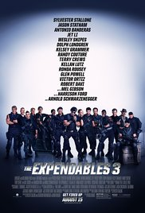

Favorite Movies
Underworld: Blood Wars
Genres: Action, Adventure, Fantasy
Release Date: 24 November 2016 (Russia)
Short Description: Vampire death dealer, Selene (Kate Beckinsale) fights to end the eternal war between the Lycan clan and the Vampire faction that betrayed her.
The Expendables 3

Genres: Action, Adventure, Thriller
Release Date: 14 August 2014 (Russia)
Short Description: Barney augments his team with new blood for a personal battle: to take down Conrad Stonebanks, the Expendables co-founder and notorious arms trader who is hell bent on wiping out Barney and every single one of his associates.
The Avengers

Genres: Action, Adventure, Sci-Fi
Release Date: 3 May 2012 (Russia)
Short Description: Earth's mightiest heroes must come together and learn to fight as a team if they are going to stop the mischievous Loki and his alien army from enslaving humanity.
Thor

Genres: Action, Adventure, Fantasy
Release Date: 28 April 2011 (Russia)
Short Description: The powerful, but arrogant god Thor, is cast out of Asgard to live amongst humans in Midgard (Earth), where he soon becomes one of their finest defenders.
Home